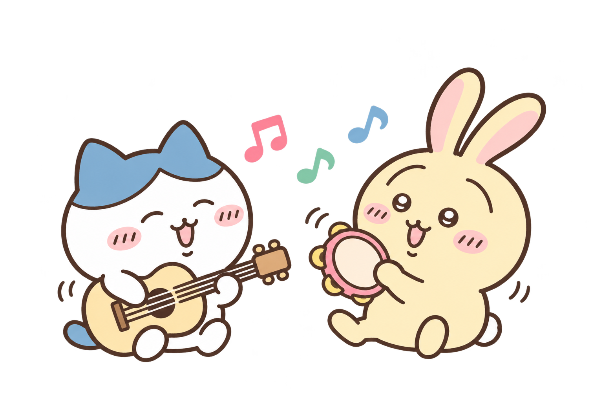
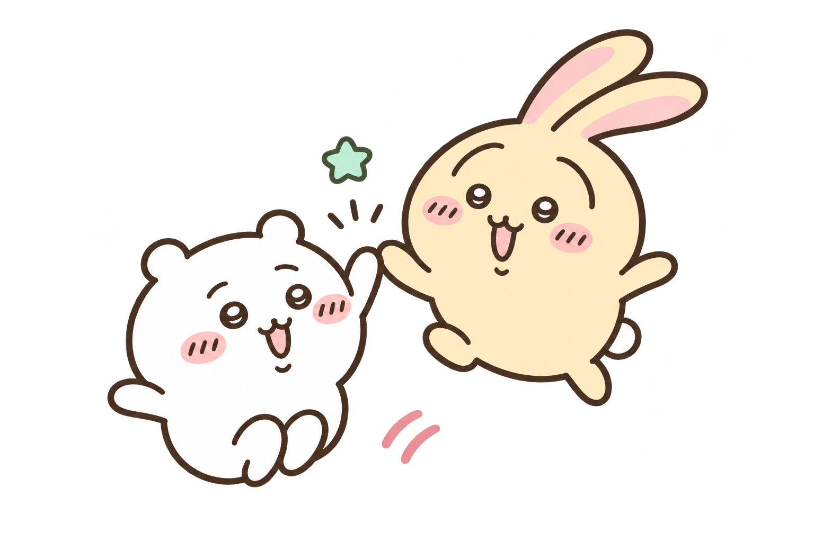
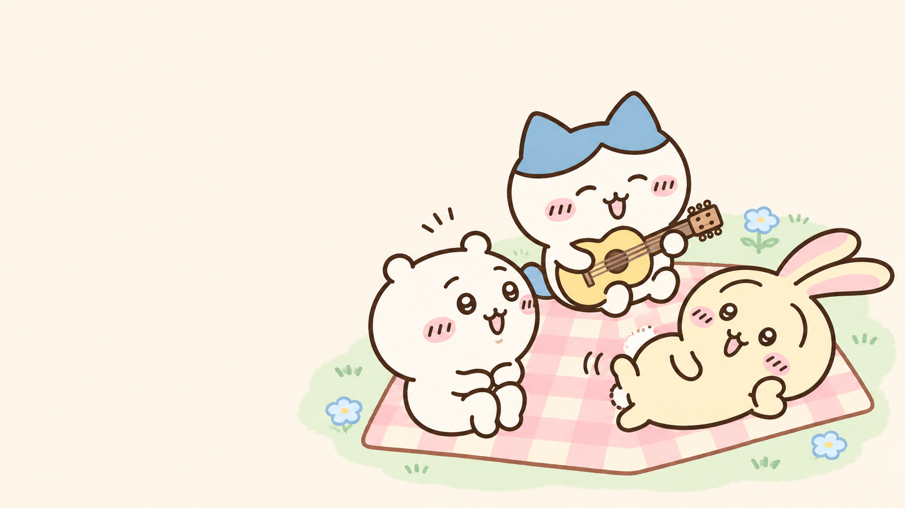
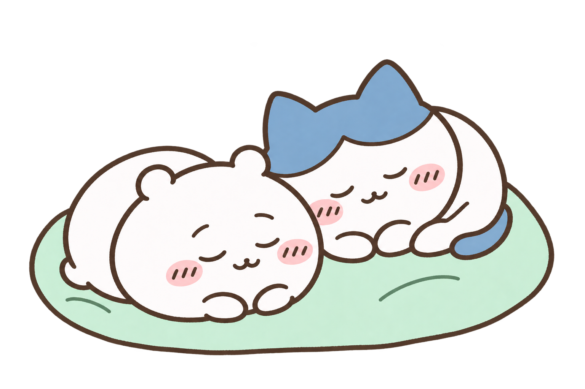
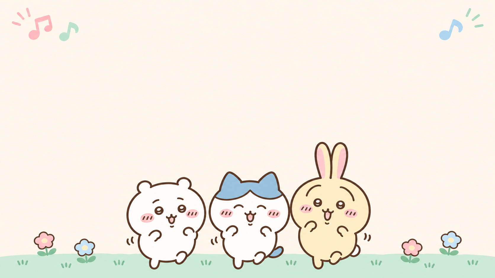
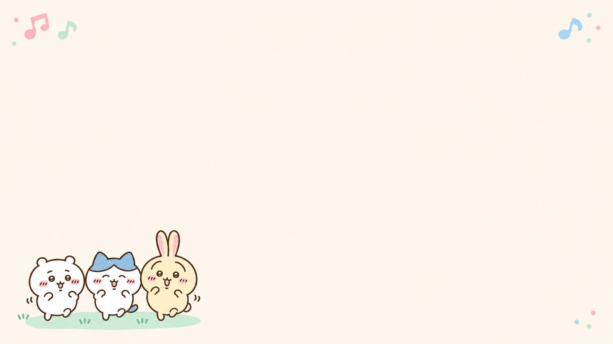

StepMania 6, a little softer.
Recognizable Chiikawa, Hachiware, and Usagi with warm cream, pastel pink, mint, and sky blue. Every candidate now shows at least two characters. Three new pair compositions join the retained group and resting-pair illustrations. The screen concepts now reuse the original theme’s fonts, arrows, and judgment artwork.
These are fan-art concepts and illustrative layouts, including an animated menu-background study. They are not official artwork, game screenshots, or an installed theme. Text tint and surrounding surfaces adopt the pastel palette; the original note and judgment colors remain distinct. The current game remains unchanged.
See it in context
Each screen uses artwork suited to its purpose.
Random mode chooses when you enter a screen and avoids its previous choice. Artwork stays fixed during a song. Use Show another to compare candidates here. Painted title scenes keep their own illustrations.

Title concept: original bitmap text with paired artwork and gentle background motion. Painted scene alternatives are static.
Original gameplay visuals, preserved
The screen concepts draw the bundled bitmap fonts, arrow/receptor textures, and judgment sheet. No letterforms or arrow shapes have been regenerated. Asset mappings and limitations.
Illustration variations
Open each full-resolution PNG to inspect it. Try the cutouts on cream, checkerboard, and dark backgrounds; the source pixels are unchanged.
11 · Listening together
Two friends nestled together in a low seated composition; transparent PNG.
Open full image · Prompt
12 · Acoustic duet
An interacting pair with different instruments and unequal heights; transparent PNG.
Open full image · Prompt

13 · Shared jump
Two airborne characters form a rising diagonal; transparent PNG.
Open full image · Prompt

08 · Picnic rehearsal
A wide interacting scene with unequal head heights and a triangular group. 1672 × 941 · opaque PNG.
Open full image · Prompt

10 · Rest
Two curled sleeping characters form a quiet low silhouette. 1536 × 1024 · transparent PNG.
Open full image · Prompt
01 · Character trio
Reusable welcoming decoration and visual reference for the set. 1536 × 1024 · transparent PNG.
Open full image · Prompt

02 · Title background
Open central space for the title and menu. 1672 × 941 · opaque PNG.
Open full image · Prompt

03 · Song-selection background
A small corner vignette leaves the song list clear. 1672 × 941 · opaque PNG.
Open full image · Prompt
04 · Results and replay
A supportive celebration for results or recordings. 1536 × 1024 · transparent PNG.
Open full image · Prompt